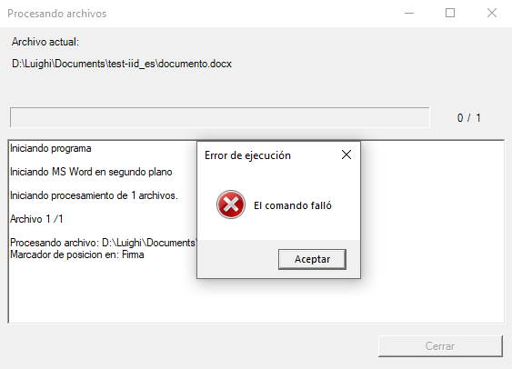
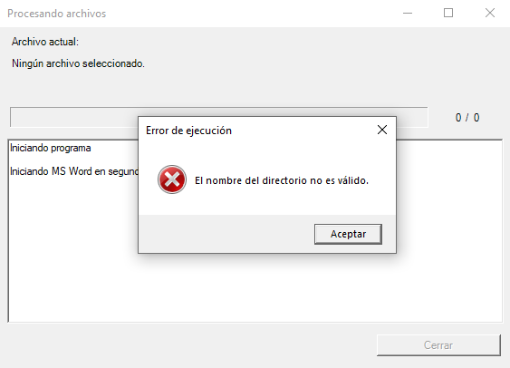
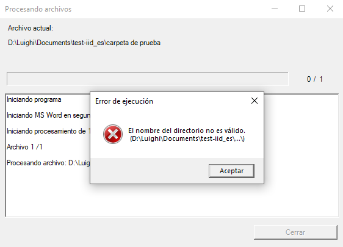
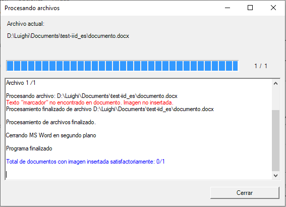
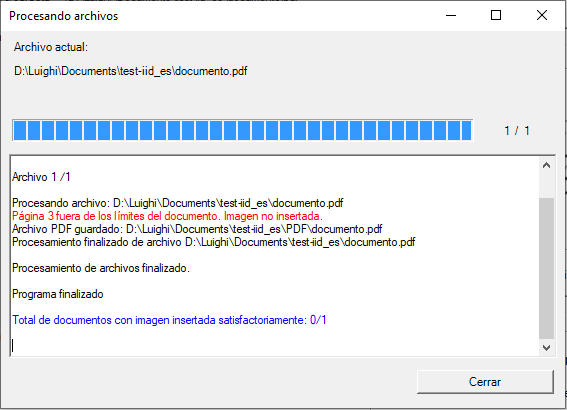

Solución de problemas
Al utilizar el software existe la probabilidad de enfrentar algún comportamiento inesperado. Hay algunas circunstancias que pueden producirlos, y aquí describimos los más comunes.
El comando falló
En el cuadro de registro, justo después de encontrar el marcador de posición en los documentos de Word, aparece el mensaje El comando falló en una ventana emergente.

Causas
Esto se debe a archivos PDF abiertos generados anteriormente, que seran regenerados con el software.
Solución
Cierre los archivos PDF generados anteriormente, ya que prohíbe la creación de un nuevo archivo PDF. Una vez que los haya cerrado, haga clic en Generar nuevamente y el archivo se generará normalmente.
El nombre del directorio no es válido
Al generar el archivo, justo después de que el cuadro de registro muestre que MS Word está abierto o el programa de inicio para PDF, muestra un mensaje: El nombre del directorio no es válido.
Caso 1:

Caso 2:

Causas
Es porque tenía una configuración anterior de tipo Archivos, pero que luego cambió a tipo Carpeta sin seleccionar la carpeta correspondiente, manteniendo el nombre del archivo anterior, o viceversa.
Solución
En la fila Dirección de archivo/carpeta, haga clic en Explorar para seleccionar la carpeta si lo desea, o regrese a la opción Archivos y seleccione un archivo válido.
Texto no encontrado, imagen no insertada
Al intentar insertar la imagen tomando texto como referencia, muestra que no se encuentra el texto aun cuando puedo ver esas palabras en el documento.

Causas
Si ve el texto en el documento y el software muestra que no se encontró el texto, probablemente se deba a que el texto no está escrito correctamente en el cuadro Marcador de posición o, en el caso de un documento PDF, el texto no se puede seleccionar como tal (es una imagen que contiene texto).
Solución
Hay algunas alternativas que puede probar:
Para documentos Word/PDF:
- Asegúrese de que el texto esté escrito correctamente en el cuadro de texto. Tenga cuidado con los espacios y las mayúsculas y vuelva a intentarlo.
Para documentos PDF:
- Compruebe si el texto se puede seleccionar con un visor de PDF (Ej. PDF Acrobat Reader). Si no es así, es probable que se trate de una imagen o un gráfico incrustado que no se puede tratar como texto en el documento. Si es el caso, considere usar la referencia relativa a página, o pruebe un software OCR para reconocer los caracteres y luego use este software para insertar la imagen.
Página fuera de los límites del documento
Cuando se usa la opción de referencia Relativo a la página, muestra que la página ingresada está fuera de los límites del documento.

Causas
La página ingresada es mayor que el número máximo de páginas presentes en el PDF.
Solución
Revisa la página en la que vas a insertar la imagen. Tenga en cuenta que el número de página es absoluto (algunos PDFs tienen un estilo de numeración diferente que puede no corresponder con el número de página absoluto), luego debe verificar que la página exista en el documento.